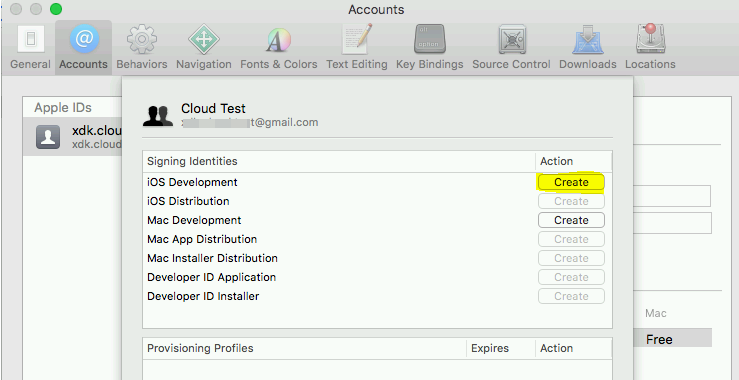

Remote Build¶
Remote build provides the following capabilities:
Building .app and .ipa files from Android Studio* on Windows* for iOS* devices on a remote macOS system located in a local network.
Run and debug iOS* apps built remotely on iOS* devices connected to Windows* host
Running iOS* apps on a simulator on Windows* hosts is not possible.
This tutorial covers information related to the Remote build to get started:
How to create remote build configuration and run the build
Apple* P12 certificate and provisioning profile obtaining
Known issues and troubleshooting steps
The requirements for the Windows and macOS hosts are listed on the Prerequisites page.
Setting Up Xcode & Keychain¶
Before any remote build can occur, we need to ensure the build server’s Xcode is setup correctly.
Prepare Xcode¶
Go to Xcode > Preferences > Accounts.
Click on the + icon and login with your Apple ID.
Select your team.
Create an iOS Development signing identity.
Download all provisioning profiles.
Connect a device to the system and make sure you can run an application on it.
Prepare Keychain (Optional, Recommended)¶
Open Keychain Access
Create a new Keychain with File > New Keychain…
Save as moeremotebuild
Give it a password, ie.: devpass
Move the iPhone development certificate and the corresponding private key from the login keychain to the new one.
Double click the private key, make sure the Access Control is set to Allow all applications to access this item, or make sure /usr/bin/codesign is added to the allow list.
Warning
On macOS Sierra remote servers open Terminal and run:
security set-key-partition-list -S apple-tool:,apple: -k devpass moeremotebuild.keychain
If this is not done, builds might fail with SecKey API returned: -25308, (null)...: unknown error -1=ffffffffffffffff
Setting Up OpenSSH¶
The Multi-OS Engine remote build system currently requires public-key authentication. For this we must create a private/public-key pair. GitHub has a great description on how to do this [here](https://help.github.com/articles/generating-a-new-ssh-key-and-adding-it-to-the-ssh-agent/). (Note: the -C “your_email@example.com” parameter is not required.) NOTE: Make sure to generate the key in the “PEM” format. For that add “-m PEM” to the ssh-keygen command.
Build Server¶
We must setup OS X’s Remote Login feature to use public keys instead of passwords.
Login to your remote server.
Go to System Preferences > Sharing and disable Remote Login.
Open Terminal.
Type sudo nano /etc/ssh/sshd_config and enter password to edit.
Change the parameters to the following:
RSAAuthentication yes PubkeyAuthentication yes PasswordAuthentication no ChallengeResponseAuthentication no
Press ctrl + O to save and ctrl + X to exit.
Type mkdir -p ~/.ssh && nano ~/.ssh/authorized_keys
Add the contents of your id_rsa.pub file into a new line.
Press ctrl + O to save and ctrl + X to exit.
Go to System Preferences > Sharing and enable Remote Login.
Development Host¶
Copy the generated RSA private key onto your development host.
Creating run configuration in Android Studio¶
To use remote build in Android Studio, fill out the Remote Build tab in the Run Configuration.
Use the correct file path for the SSH private key file.
Specify a path for the known_hosts file, if it does not exist, it will be created automatically.
The Gradle repositories field can be left empty by default, it is only required if custom local Maven repositories are required on the build machine.
If you skipped the Prepare Keychain step and would like to use the login keychain, then enter “login.keychain” as the “Keychain.name” and your login password as the “Keychain.pass”.
After that the launch will use the remote build settings automatically.
Getting Apple developer certificate and provisioning profile on macOS¶
An Apple developer certificate is needed in order to run the code on a physical iPhone and iPad. Apple Mac machine and membership in Apple Developer Program ($99/year) are needed to generate P12 certificate and to submit your apps to the AppStore. It is possible to generate the certificate using “free” Apple developer account on macOS with Xcode 7, but you will not be able to submit your application to AppStore using this certificate.
Go to macOS machine, open Xcode, open the Accounts preferences pane, and check whether your Apple ID is registered. If it’s not listed, click “+” button to add it.
Make sure that you have a valid signing identity and provisioning profiles. Choose your account in the accounts preferences pane and click on “View Details”.
To export P12 certificate, start the Apple Keychain Access* application by opening the Applications folder and choosing the Utilities option.
Select the Apple certificate to be exported, click File in your Apple menu and select Export Items from the drop-down menu.
In the Save As field, enter a name for the Export p12 file. Enter a password for your p12 file (1 character minimum). Click OK.
Copy the downloaded p12 file to your Windows* system so you can use it to configure MOE remote build.
To find existing provisioning profile on your hard drive, go to Xcode -> Preferences -> Accounts -> View Details, right click on the provisioning profile with required Bundle ID and select “Show in Finder:
You can generate new Provisioning Profile on Apple* web site. Go to https://developer.apple.com, sign in to Member Center, and open “Certificates, Identifiers & Profiles” link:
After you sign into your Apple* Developer account using a web browser, select Certificates, Identifiers & Profiles. Click Provisioning Profiles, then select “Distribution”, click “+” button. Select your distribution type (“Ad Hoc” for testing or “App Store” for a final distribution/production build), click continue. Then select your App ID and click Continue. Then select your certificate, select the desired devices. Name, generate, and download the Provisioning Profile.
You can create multiple Ad Hoc provisioning profiles depending on the testing devices to be used. Typically, create one or more for ad hoc testing purposes. Later, create a production provisioning profile for the final Apple AppStore distribution.
Certificates generation using “free” Apple developer account¶
Prerequisites:
macOS machine with installed Xcode 7.x
iOS device connected to the mac machine
Limitations of the free certificate:
You will not be able to submit your applications to AppStore*
You can’t manage your certificates and provisioning profiles using https://developer.apple.com site
Create a free Apple ID if you don’t have it.
Open Xcode 7, navigate to Xcode -> Preferences -> Accounts and press “+” button to add your Apple ID. Select your account and press the “View Details” button.
The next screen allows you to create the development certificate. To do this, press the Create button next to the iOS development text. Once this process has completed, press Done.
Now you can find the generated development certificate in “Keychain Access” program.
Now connect your iOS* device to the macOS machine. Create new project for iOS* using Xcode* project wizard (File -> New project). Enter the Product name, Organization Name and Organization Identifier sections, press Next and save your project. You should see the following screen:
Select your iOS* device from the target selection drop-down menu. Press the “Fix Issue” button to create the provisioning profile for your device. Press the “Play” icon to build the project and deploy the application to device to ensure that everything is set up correctly.
It’s possible that the first time you get message “process launch failed: security”. It indicate that provisioning profile was not approved by device. To fix it you should go Settings -> General -> Profiles and mark corresponding profile trusted. To save the development certificate as .p12 file, go to Keychain Access, select the certificate, open the arrow to also select the private key and export them together as a .p12 file. To find the provisioning profile, go to Xcode* -> Preferences -> Accounts -> View Details. right click on the provisioning profile with required Bundle ID and select “Show in Finder”.